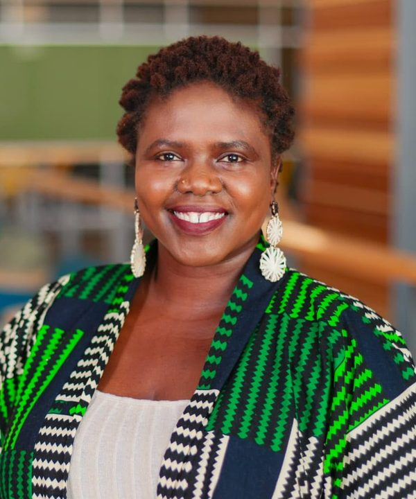

Scholar · Visual Artist · Poet
I study how culture, language and identity move through media, from African cinema and indigenous-language storytelling to the creators reshaping how Africa is seen. I am a PhD candidate in the School of Journalism and Communication at the University of Oregon.

Three connected areas of inquiry.
Cultural foundations of communication, cross-cultural interaction, and identity formation in global contexts.
Indigenous-language localization, multilingualism in cinema, and how global media flows adapt to local contexts.
Representations of cultural identity in popular media, decolonizing the African gaze, and the political economy of African film.
Eleven teaching assistantships across nine courses at the University of Oregon, spanning media, law, ethics, culture and storytelling.
AFR 215: Introduction to African Studies, University of Oregon
JCOM 201: Making Sense of Media, University of Oregon
My teaching treats film and media as subjects for critical analysis, sites of cultural production, and resources for collaborative inquiry. I want students to leave my courses able to interpret audiovisual and multimodal texts, communicate their ideas clearly in writing, speech, and visual forms, and assess how power shapes representation in a globalized economy. I also want them to see their experiences and cultural perspectives as valuable starting points for inquiry, without mistaking experience for evidence. I see communication as a bridge across disciplines: the skills that help future analysts, marketers, and entrepreneurs critically read the media landscape also enable them to speak and act ethically within it.
The questions behind my research also live in my studio and on the page.
“Your path and purpose in this world have always been clear, give the universe a chance to guide you.”